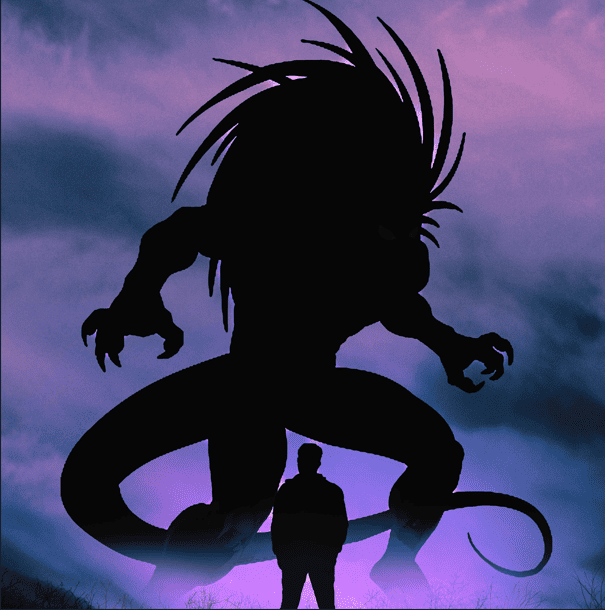
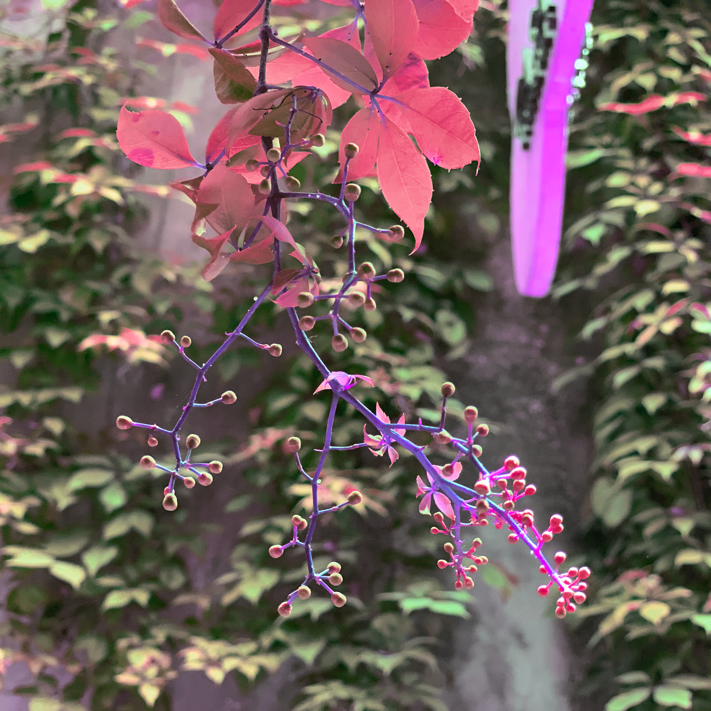

Me llamo Luis Rosaldo, soy de México y me gusta mucho crear proyectos digitales
que pueda compartir con las personas. Me especializo en el desarrollo de
videojuegos, pero también tengo otras habilidades, como el uso de Blender para
montajes de escenas surrealistas, o el uso de Photoshop para crear ediciones
basadas en canciones y música que me inspira.
Qué hago

Game Developer
Como se puede ver en la página principal, he trabajado en varios proyectos a lo
largo de mi carrera universitaria, también he desarrollado varias herramientas de
gráficas computacionales usando SFML y DirectX 11. También he participado en el
desarrollo de simulaciones con físicas realistas, como un sistema de gravedad en
un sistema solar, una simulación de flotabilidad de objetos complejos y un sistema
de caminata mediante animación procedural.
Photoshop Montages
Uno de mis hobbys es crear montages en Photoshop inspirándome en mis canciones y
artistas favoritos. Hoy en día cuento con una colección completa de ediciones de
todas las canciones de los 4 álbumes de la banda de rock Starset.
Blender Lighting & Scene
Tengo los conocimientos y la capacidad para armar escenas en Blender mediante el
uso de diferentes modelos, conocimientos de fotografía aplicada al armado de la
escena final, y uso de diferentes técnicas de iluminación para crear escenarios
llamativos.

Curiosidades
Me encanta escuchar música de todo tipo en todo momento: cuando trabajo, cuando estudio, cuando juego, etc.
Mi meta es llegar a vivir como un Game Developer.
Mis videojuegos favoritos son Fallout 3, Persona 5: Royal y Marvel vs Capcom 2.
Contacto
Encuentra todas mis redes y proyectos en un solo lugar: